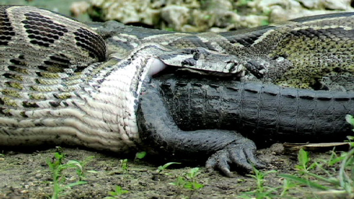
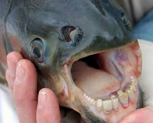
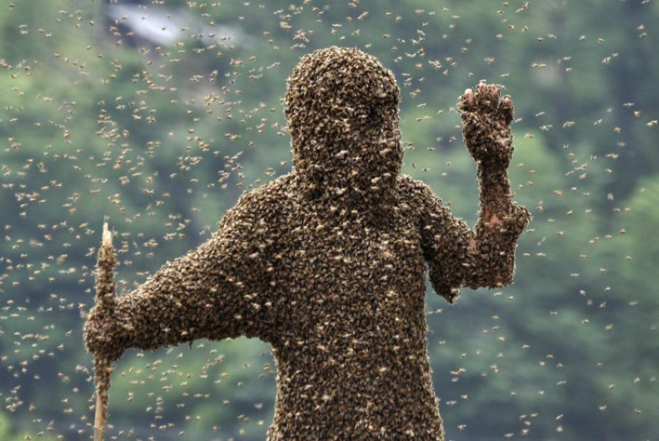
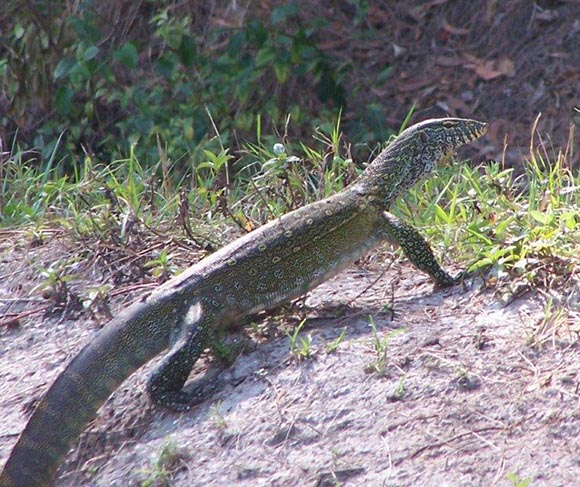
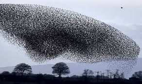
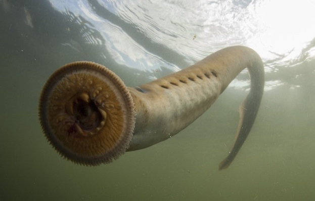

Naturalism is a fine study, the study of the natural world. However, our studies prove that when you tinker with nature, it always bites back. Here are some examples of our biggest mistakes.

This is a Burmese python. They are hulking behemoths with an attitude to match, and con now be found in your own backyard. In their native South East Asia, they are almost endangered, but here in America, they are thriving, and eating everything that moves. They are well established in the Florida Everglades, where they have decimated the populations of deer, opossums and raccoons of almost 99%. And if that isn't bad enough, they have been proven to be moving north. Soon, they will be in your backyard, somewhere up north.

One can only hope that they do not encounter a Pacu while swimming in a river. These calm, vegetarians are close relatives of the piranha, and are natives of the Amazon river in South America. However, when they were introduced to the Sepik River in Papua New Guinea for the fishing industry, the calm, vegetarian fish quickly ate all the vegetation in the river. And if that isn't bad enough, they turned to a different food source-living animals. They have huge, human-like teeth, which they use to bite chunks out of People, Crocodiles, Birds, and anything that moves. And unlike their relatives, the piranha, they have a painful, messy tear when they bite. And if you think that it is just a problem in someone else's backyard, they have been spotted in 19 U.S. states.

The killer bee is a heartless, murderous creature. Anything that comes near it's hive, they will cause a mega swarm, and kill anything in it's sight, and chase them up to 1/4 of a mile. When scientists bred European and African honeybees in South America in attempts to make a reliable honey source, they took the agressive side of the African honeybees, escaped, bred with native bees, and spread as far up as the deserts of the southwest U.S., where they have killed hundreds of people. They now continue to chase away and kill native, and endangered, bee species.

The Nile Monitor, a vicious, cold-blooded killer with sharp teeth and sharper claws, is now in the Florida Everglades, for the same reason as the Burmese Pythons. People thought, for some reason, that it would be a good idea to keep a vicious, meat-eating super-sized lizard into their homes as pets. Once they came to their senses, they released them into the wild, also a terrible idea, and bred in the wild, where they feast on endangered birds and American Alligator eggs. And, if that is not bad enough, ever wonder where your new puppy went?
Kudzu is a beautiful, perennial vine native to Eastern Asia, with bright, purple flowers. sounds great, right? Well, look at the Southern states, an you will see how it lives up to it's nickname "the vine that ate the south". In the 1800s, Kudzu was introduced to hold together soil, it quickly adapted to the warm weather and now grow up to a foot a day. wonder where your house went? Check under that big pile of green.

A beautiful sight in the sky, European starlings flock in the million all over the world, for example, in America. But how, you might ask, would a European Bird get to America? In the late 1800s, Eugene Schieffelin, a Shakespeare fan, wanted to introduce every bird ever mentioned in Shakespeare's pieces to America. So, he released 100 Starlings in New York. The starlings stayed local for a while, then spontaneously spread to all over America, Central America and Canada. They flock in swarms of millions, imitate the most annoying noises, like a car beeping(which is pretty cool), jeopardize bird feeders and crops and displace native birds. All of this, just for shakespeare.

Believe it or not, this is a real fish. It is a species of Jawless, bloodsucking fish, that has survived mass extinctions. This is a sea lamprey. As the name implies, they are found in the North Atlantic ocean. However, when they were introduced to the Great Lakes, a landlocked body of water, they went completely insane. They attack fish and people, by latching on to their victim, using their circular, toothy mouth and spiky tounge, to break the skin and suck the blood.
And, as man makes more mistakes, the Earth pays dearly. And when we mess up more, we pay as well.